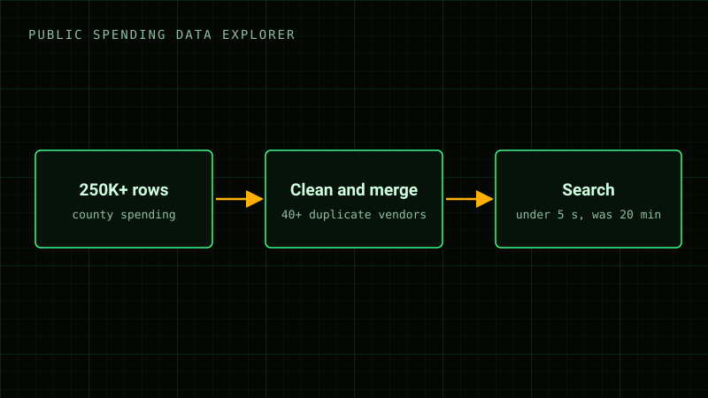

Data project
Public spending data explorer
A search tool for county spending records.
- No public link.

By the numbers
- 250K+rows cleaned
- 40+duplicate vendors merged
- 20 minper search before
- Under 5 sper search now
One vendor, many spellings
| Vendor | Amount |
|---|---|
| CEDAR HOLLOW PAVING | $18,240.00 |
| Cedar Hollow Paving LLC | $6,115.50 |
| Cedar Hollow Paving, L.L.C. | $2,980.00 |
| CEDARHOLLOW PAVING | $940.25 |
| REDBUD OFFICE SUPPLY | $3,410.80 |
| Redbud Office Sup. | $1,202.15 |
| Red Bud Office Supply Inc | $655.00 |
| MESQUITE RIDGE FLEET | $9,870.00 |
| Mesquite Ridge Fleet Svc | $4,330.40 |
9 rows, 3 vendors spelled 9 ways.
Sample rows made up for this page. The real records had 40+ vendors like these.
Time to answer one search
By hand20 min
NowUnder 5 s
Bars to scale. The second bar is less than half a percent of the first.
What I did
- Cleaned 250K+ rows of county spending records.
- Merged 40+ duplicate vendors into one name each.
- A search that took 20 minutes by hand now takes under 5 seconds.